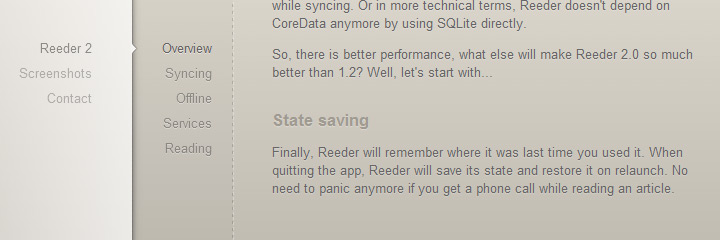
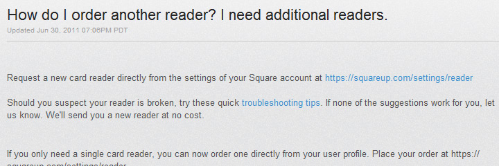
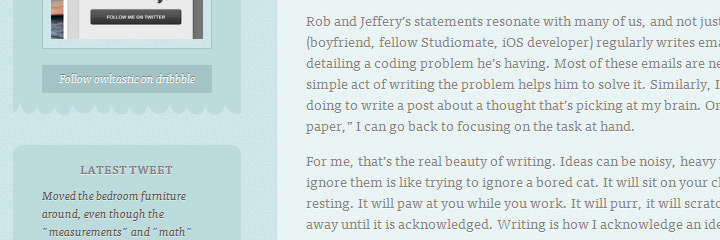
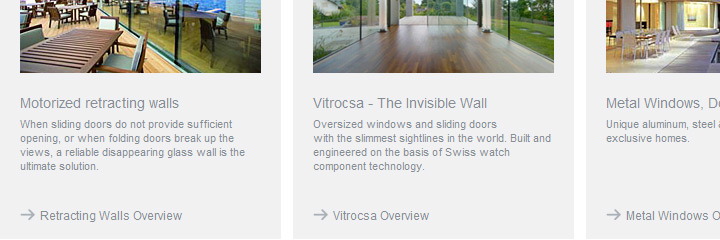
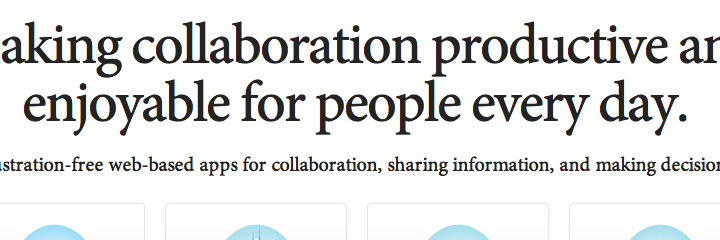
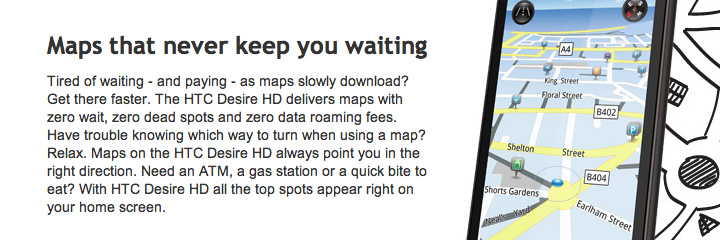
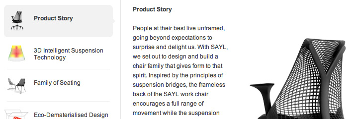
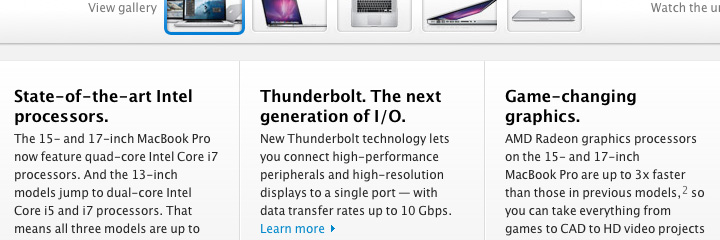
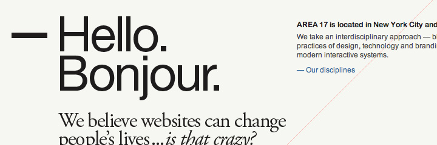
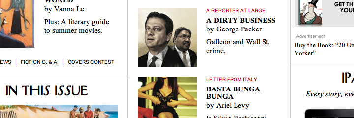

ContrastRebellion
Low-contrast fonts and unreadable texts?
To hell with them!
Let's start with the casus belli!
Click the button or press "space" to continue!
Look at these websites. They look fabulous indeed but how good is that
if people can't read them?
Look at these examples (there's an alarming number of them):




No contrast
•
•
•
•
•
•
Why does readability matter?

Because a website's content is
primarily there to be read.
Don't give your visitors a headache only because gray or any other low-contrast type looked better on the design comps than black.
Remember:
Wait, why are there low-contrast sites then?
Because sometimes we only think about aesthetics
Clearly, aesthetics are
important but
aren't the ultimate goal of design. And often poor readability doesn't get noticed during the design process, as we are not
like our users. We don't read the texts as a visitor does.
When making
the contrast of
the font lower
and lower...
designers need
to think of
elderly users
with bad vision
So should we ditch aesthetics?
Wait, contrasty dark text
can look equally good:
(apart from being a blessing to users who are actually
interested in what you'd like to say)






High contrast
•
•
•
•
•
•
Ok-ok, but isn't it just your opinion?
Glad you asked.
No, it's not just our opinion.
- W3C's Web Content Accessibility Guidelines set the minimum contrast between text and its background so that it can be read by people with moderately low vision (which is quite common).
- A readability experiment conducted on web pages shows the importance of sufficient contrast between the text and the background.
- Another experiment confirms that reading time is lower when there's a high contrast between the text and the background. What's more, contrast sensitivity declines with age. Also, see more papers on readability.
- Connie Birdsall from Lippincott says that "Ensuring print legibility presents a creative challenge to the design community and prompts us to re-examine what we do. It also reminds us to keep audience needs top of mind when we design."
- Usability expert Jakob Nielsen has shown many, many times that reading on the computer screen is harder than reading printed material even without making the font illegible. And mobile is worse.
- .. and many have written about why gray text is a crime here, here, here and here...
So what we're trying to say is...
Let's put an end to this low-contrast, light gray nonsense and use typography for its purpose:
making text readable.
Agree? Let's change the world together!